You may be required to fill a registration form if you are the first
time to use MTurk.
Worker registration
Find Our Hit
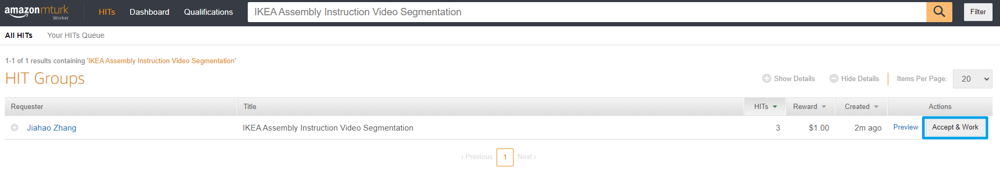
Search for IKEA Assembly
Instruction Video Segmentation and Accept.
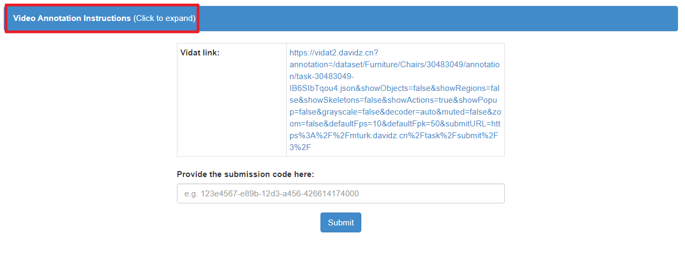
Expand to read the
instruction.
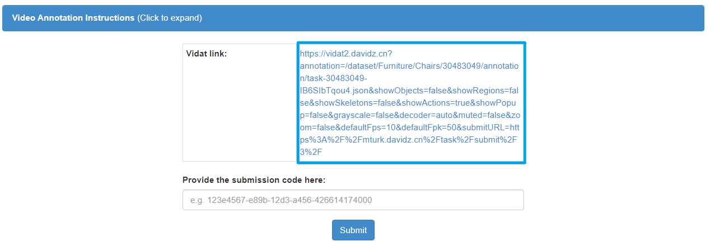
Open the link in a new tab.
Annotation In Vidat
Abstract
You will be annotating a video segmentation task. Obtained from
YouTube, each video contains one or more persons assembling IKEA
furniture. The corresponding IKEA official instruction manual is split
into steps. Your task is to find the start and end time of each step.
Using the Vidat(video annotation tool) we provided.
Vidat Introduction
Header a video caching
status and a dark mode toggle. Once all frames are cached, you can
change the frame smoothly.
some useful hot keys for video control:
P play / pause video segment
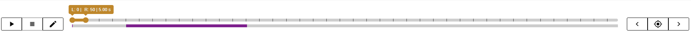
Keyframe Panel on the
left, you can play the video segment specified by the range or edit
keyframe list. In the middle, you can change the frame of left/right
panel by dragging the left/right thumb or the range, the purple below
indicates the frames annotated by actions. One the right, you can quick
locate the keyframe(s).
Some useful hot keys for frames control:
COMMA, <, PERIOD, > advance to
previous / next keyframe
LEFT-ARROW, RIGHT-ARROW previous / next
frame
UP-ARROW, DOWN-ARROW cycle through the
frame slider: right > range > left
PAGE-UP, PAGE-DOWN, jump to previous /
next 10% of video
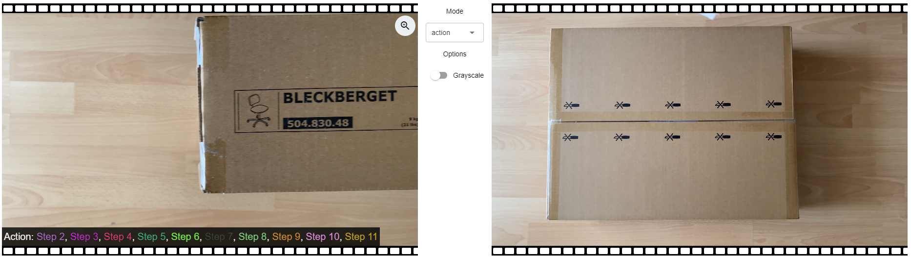
Left/Right Canvas Panel and
Control Panel (in the middle) there is an action indicator on
the left-bottom corner to show actions which cover current
frame.
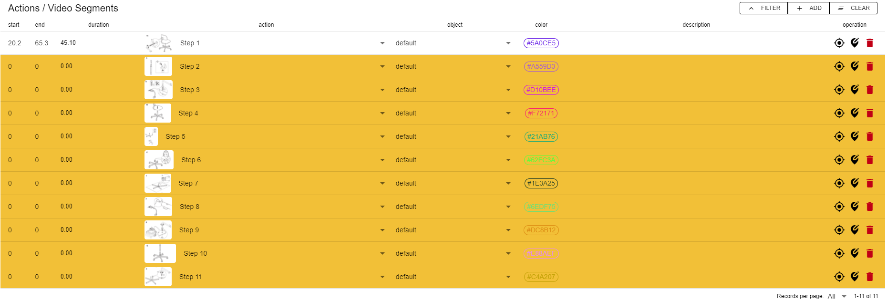
Action / Video Segment
Table you can modify the action annotation List.
ADD or press PLUS (+) key on your keyboard
to add a new action
CLEAR bulk delete all actions
start start time in seconds
end end time in seconds
duration duration (end time - start time) in
seconds
action the action label, in this task, it refers to
steps
object the corresponding object label, please leave it
as default in this task
description
set
start/end time as current left/right frame
set
current left/right frame as start/end time
delete this
action
Annotation Steps
Step 1
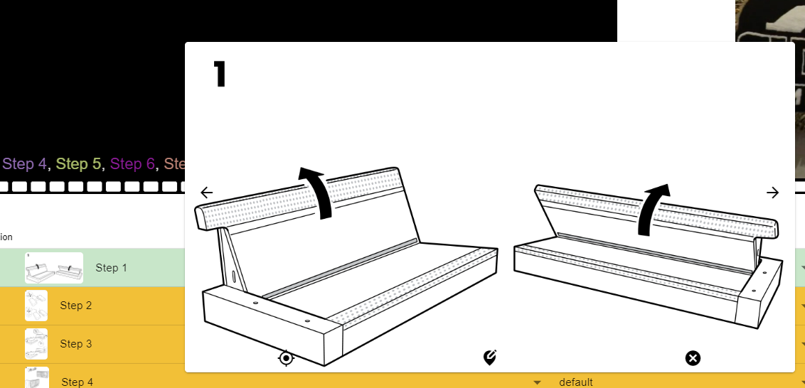
Click the thumbnail(not the action name
dropdown menu) to open the step preview. You can first go through all
steps by the prev next buttons.
Step 2
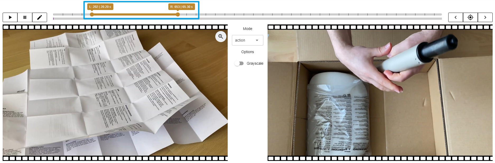
Locate left and right panel to align
start and end frame of current action. Here you can use
up/down/left/right keyboard shortcuts (details are shown in the above
section).
Step 3
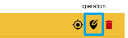
Click the second button on the
corresponding row to set start and end time for this segment. Or the
same button on the step preview.
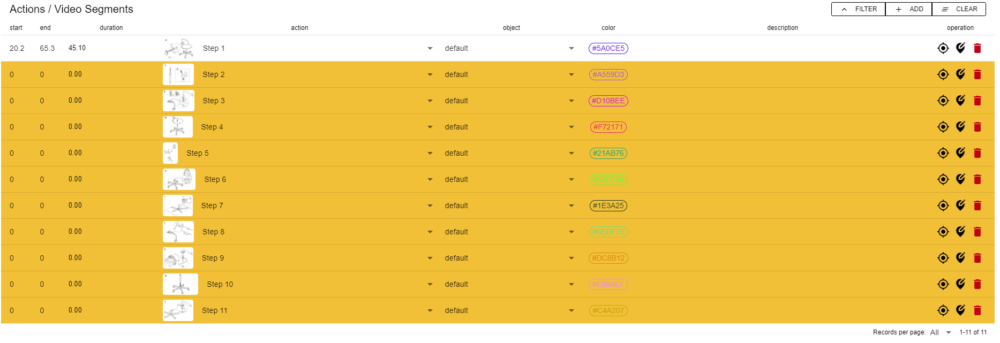
Once the duration is longer than 0, the
warning (yellow) color will disappear.
Step 4
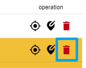
Delete the segment if it is not shown in
the video.
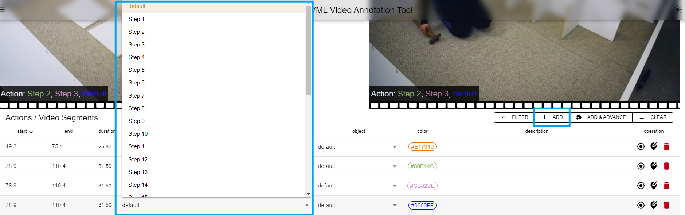
Add a new action and set it to the
corresponding step in situations like two or more steps are overlapping
with each other.
Step 5
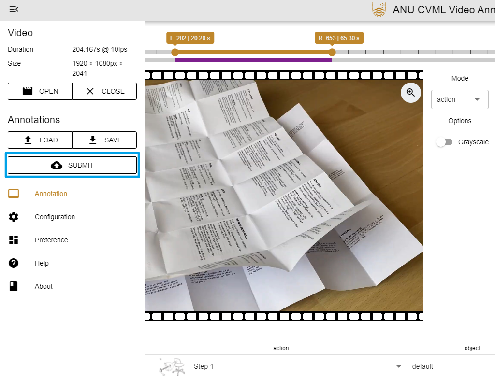
Open the side menu after finishing
annotation, and click submit button
Please check the followings before submitting
the video has not changed
the configuration has not changed
duration of each action is greater than 0
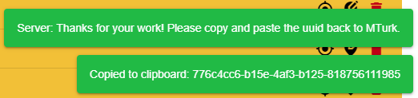
Your submission id will be notified and
copied to your clipboard automatically. This is REALLY IMPORTANT as it
is the only prove of your work. Please do paste the correct submission
id back to the MTurk.

set start/end time as current left/right frame
delete this action